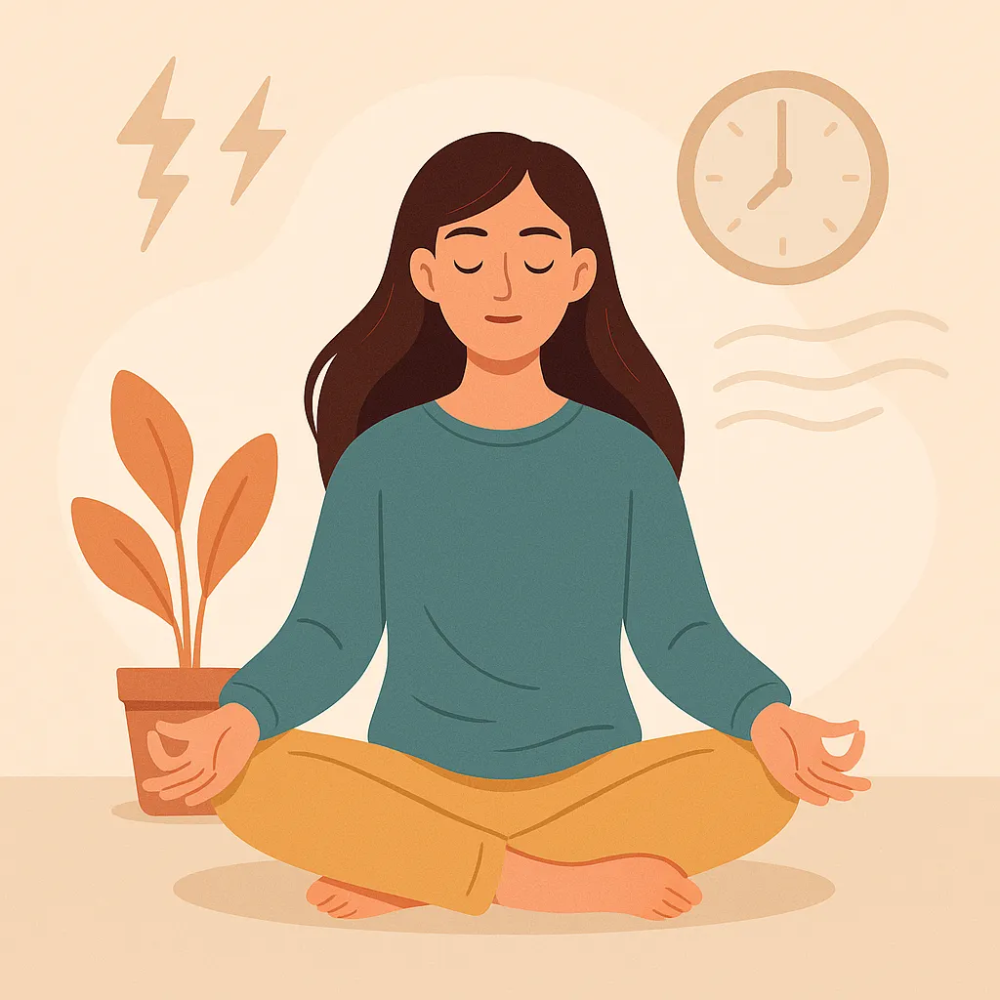
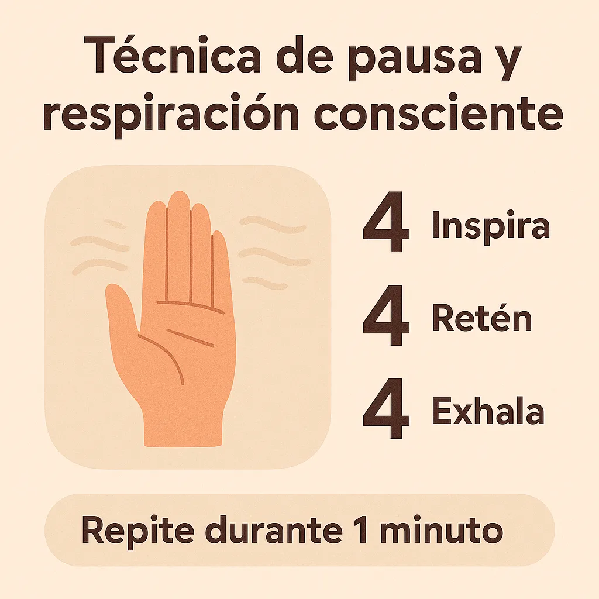

Cómo hacer una pausa consciente en medio del caos
¿Te has sentido sobrepasado por la rutina? En días llenos de tareas y pantallas, una pausa consciente puede marcar la diferencia entre el agotamiento y la recuperación. Aquí aprenderás cómo parar, respirar y reconectar con el momento presente para reducir el estrés.
¿Qué es una pausa consciente?
Una pausa consciente es una breve interrupción voluntaria en medio de la actividad diaria. Puede durar entre 30 segundos y 5 minutos, y te permite observar tu cuerpo, tu mente y tu respiración sin juicios.
Es una práctica que combina elementos del mindfulness, como los que exploramos en la meditación guiada para principiantes, pero en formato rápido y accesible.
Beneficios de una pausa consciente
- Reduce la tensión física y mental.
- Restaura la energía.
- Mejora la concentración.
- Te ayuda a actuar con mayor claridad.
Este tipo de pausa puede complementar muy bien prácticas como los micro-hábitos diarios o tu journal de ansiedad.
Cómo hacer una pausa consciente en 3 pasos
1. Detén lo que estás haciendo
Pon tu móvil en modo silencio o apártate de la pantalla. No necesitas apagar todo, solo darte permiso para “suspender” un momento el ritmo.
2. Haz respiraciones conscientes
Inspira por la nariz contando hasta 4, retén 4, exhala 4. Repite durante 1 minuto. Si quieres algo más guiado, prueba el ejercicio en nuestra Guía de respiración 4-7-8.
3. Observa sin juzgar
Lleva tu atención a lo que sientes: tu cuerpo, tus pensamientos, tu entorno. No trates de cambiar nada. Solo respira y observa. Este pequeño gesto es transformador.
Cuándo hacer una pausa consciente
No hay un momento único. Puedes aplicarla:
- Antes de una reunión importante.
- En medio de una discusión o momento tenso.
- Al notar ansiedad o pensamientos acelerados (consulta cómo calmar la mente en 60 segundos).
- Al final del día como parte de tu ritual antiestrés.
Hazlo un hábito diario
Agéndalo. Pon recordatorios. Crea tu propio “momento de pausa”. Si eres constante, estas pequeñas interrupciones pueden ayudarte a mantener claridad y energía durante todo el día.